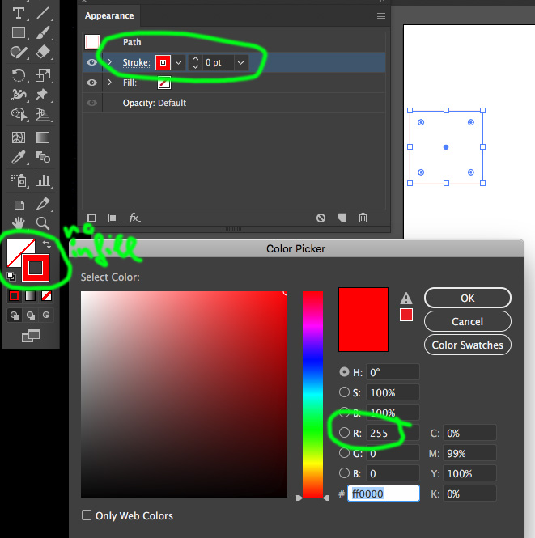
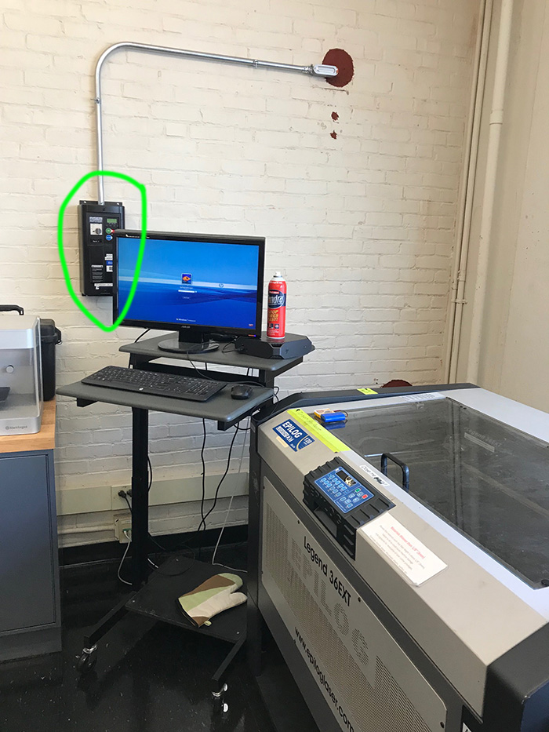
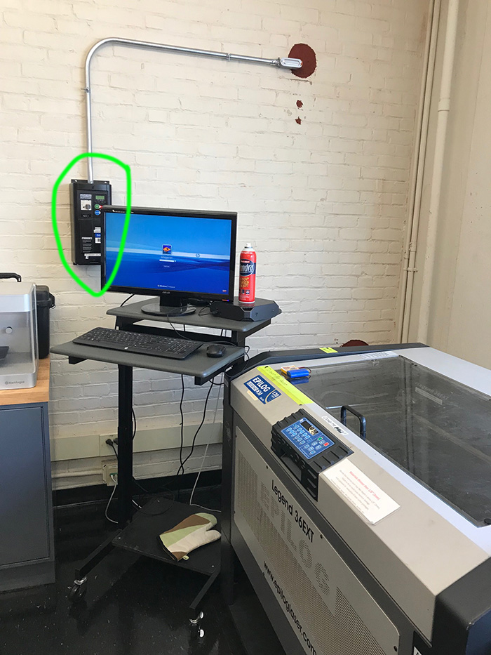

6.810 Engineering Interactive Technologies (fall 2021)
Design and Laser Cut Your Business Card
In this homework you will learn how to use a laser cutter to fabricate your own business card and also get access to the two workshops this class will use: The Engineering Design Studio (EDS) in 38-501 and the International Design Center Workshop in N52-337.


Steps:
- Create Business Card Design
- Change Drawing Settings for Laser Cutting
- Export Drawing as .pdf
- Choose Material
- Laser Cut Business Card
Deliverables
At the end of the lab, upload to your student google drive:
- laser cut file for your business card (.svg or .pdf file format)
- at least one photo of your business card (make a photo with clean background, i.e. we don't want to see crap in the background, put your card on a white piece of paper or hold it in front of a white wall to take the photo)
- bring your card to class on wednesday, September 15
Help us Improve Class Materials for the Laser Cut Business Card:
Please let us know if you had any trouble with the drawing or laser cutting or if anything was confusing in the write up.
You can add your comments here.
(1) Create Business Card Design
Create a New Drawing: Open Illustrator and create a new drawing.
Set Units to mm: If your drawing is set to 'pts' as a measurement unit, set it to 'mm'. In Illustrator, you can set the units by clicking on Edit->Preferences->Units and set all units to 'mm'.
Dimensions of your Business Card: Business cards are 85mm x 55mm. Your card needs to adhere to this size. Create a rectangle that represents the bounds of your business card, i.e. later when the laser cutter cuts out the rectangle your card has the right size.
Draw Shapes, Import Images, Write Text: To draw shapes, you can use any of the regular drawing tools in Illustrator (e.g. rectangle, circle, pen drawing tool). You can also import images that will be engraved by the laser cutter (darker pixels in an image will be engraved deeper than brighter images, which creates a relief effect). Finally, you can also use the different text tools to write text, such as your name, onto your card.
(2) Change Drawing Settings for Laser Cutting
Most laser cutters require that you specify which parts of your drawing should be cut (vector mode) and which should be engraved (raster mode). You specify this by using specific line colors and line thicknesses.
Line Color: First, set document mode to RGB by going to the menu File -> Document Color Mode -> RGB. For each shape that you want to cut, make sure its outline is 100% red (R: 255, G: 0, B:0). There should be no infill color. For text, you cannot assign an outline color directly, you first have to convert the text into a path. You can do this by selecting the text and going to Type -> Create Outlines. Once you have the outline of the text you can set its color to red (note that once a text is an outline, you can't edit the text anymore, so finalize your text first).
Line Thickness: The stroke thickness should be 0.00001mm. You can set the stroke thickness in Window -> Stroke -> Weight. The moment you hit enter after you typed in the value it will snap to 0 but internally it will still be 0.00001 so you will be all set.

Images: Since images consist of pixels and not lines, they will automatically be engraved not cut. If you have a color image, you may want to convert it to grayscale first to see if it has a good dynamic range (i.e. it has both light gray pixels and dark gray pixels). If the dynamic range is low, i.e. all pixels have a similar gray value, you will not see much of a relief effect since all pixels will be engraved with a similar depth.
(3) Export Drawing as .pdf
Save Drawing as PDF: The laser cutter can take as input either an .svg file or a .pdf file. We recommend you save your document as a pdf by going to Document -> Save as and selecting .pdf. You can always open that pdf again in Illustrator and keep editing.
Upload to Student Google Drive: Once you saved your design as a .pdf, please upload it to your student google drive folder. Let us know on slack that you have your design ready. We will check if all the settings (line color, thickness) are correct. Once we confirmed your design is ready, you can go and laser cut your card.
(4) Choose Material
We bought differently colored cardboard for you for laser cutting your business card. The cardboard is relatively thin and thus your card can fit into a wallet after you cut it out. We will also leave a bucket of various scrap materials (acrylic etc.) if you prefer one of these. If you prefer to use a totally different material feel free to do so but check with the workshop staff if it is safe to laser cut. But keep in mind that a card made from e.g. 3mm acrylic will not fit into a wallet.

(5) Laser Cut Business Card
The workshop manager will show you how to use the particular laser cutter in their workshop. Below are example instructions for one of the Universal Laser Cutters. They are only there to give you a rough idea how to setup a laser cutting job. Please follow what the workshop manager tells you.
Print Drawing to Laser Cutter Software: Transfer your drawing to the laser cutter computer via USB stick or via email. Open the pdf and go to File -> Print. Select the laser cutter from the dropdown menu (e.g. the Universal Laser Cutters are PLS150D in EDS). Hit the print button.
 Check if Drawing has the Right Settings: Open the laser cutter software by clicking on the
Check if Drawing has the Right Settings: Open the laser cutter software by clicking on the ULS Control Panel Icon on the desktop (it's a small red diamond). You should see your drawing in the software. Your drawing should have a bright red color in the view, if it is black it will not work (either your line thickness is too thick or you set the wrong color mode when making the drawing).
 Set Power and Speed Settings for your Material Sheet: Each material needs different power and speed settings. Cutting a sheet of paper needs less power than cutting a piece of wood. To set the power and speed, click the
Set Power and Speed Settings for your Material Sheet: Each material needs different power and speed settings. Cutting a sheet of paper needs less power than cutting a piece of wood. To set the power and speed, click the settings button (see previous image). In the pop-up, you need to set power and speed for the color of your drawing (i.e., in our case red). Since it is not obvious what the right power/speed is, we are going to use the software's material database.
 In the
In the material database pick your material (e.g. paper -> cardboard), then insert the thickness of your sheet. Once you hit the apply button, the values will be transfered back to the previous power/speed window and you will see that the values for the color red have changed. Click the big set button to confirm.

Insert Material: Next, insert the material into the laser cutter.
Align 2D Drawing with Material Sheet: To move the drawing to the top left corner, first click on Focus View and then click on the top left corner of the digital laser cutter bed. This will move the physical laser head to the top left corner. Next, select your drawing and click Relocate. It will now be moved to the top left corner.


Turn on Laser Cutter: First, turn on the laser cutter. The switch is on the right side of the laser cutter.
 Turn on Compressor + Filter: Next, turn on the compressor and the filter. The ventilation sucks away the dust particles that are created during the cutting process. The compressor puts the lens chamber under pressure. This prevents the dirt particles from entering the lens chamber and getting stuck to the lens, which then cause burn spots on the lens and eventually break it.
In EDS, Compressor and Filter are under the laser cutter.
In IDC, the console to turn on the compressor and filter is on the left wall. Push the green 'on' button to turn on the filter + compressor. When you are done cutting, push the 'off' button to turn everything off. The big red button is the emergency button. If the laser cutter does not turn on, the button might have been pushed in by somebody. Double check with Chris or a TA, then pull it out.

Turn on Compressor + Filter: Next, turn on the compressor and the filter. The ventilation sucks away the dust particles that are created during the cutting process. The compressor puts the lens chamber under pressure. This prevents the dirt particles from entering the lens chamber and getting stuck to the lens, which then cause burn spots on the lens and eventually break it.
In EDS, Compressor and Filter are under the laser cutter.
In IDC, the console to turn on the compressor and filter is on the left wall. Push the green 'on' button to turn on the filter + compressor. When you are done cutting, push the 'off' button to turn everything off. The big red button is the emergency button. If the laser cutter does not turn on, the button might have been pushed in by somebody. Double check with Chris or a TA, then pull it out.


 Start Laser Cutting: Only after compressor and filter are on, hit the
Start Laser Cutting: Only after compressor and filter are on, hit the green start button in the laser cutter software. Be sure to watch the laser cutter the entire time it is cutting the material. If something goes wrong, calmly hit the pause button on the laser cutter, and ask for help as needed.
Deliverables
At the end of the lab, upload to your student google drive:
- laser cut file for your business card (.svg or .pdf file format)
- at least one photo of your business card (make a photo with clean background, i.e. we don't want to see crap in the background, put your card on a white piece of paper or hold it in front of a white wall to take the photo)
- bring your card to class on wednesday, September 15
Please let us know if you had any trouble with the drawing or laser cutting or if anything was confusing in the write up.
You can add your comments here.